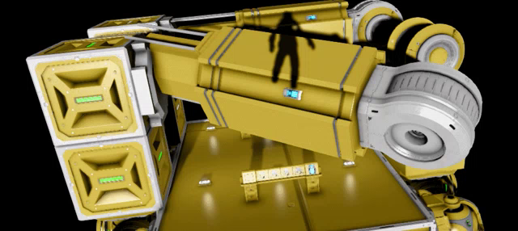

Here I will explain how to make a singleplayer game
First you will need to launch the game, for PC players go to steam, and for Console players go to your apps.
Once you have loaded up the game, you will be greated by a lovely menu screen with main menu audio. You will want to click the button "new game".
When you select "new game" You will see some senario world you can start, these are missions you can complete aswell as some tutorials to teach you about the game.
At the top of the page, you will see 3 tabs, One saying "senario" another saying "workshop" (this will not be there for console players), and "Custom game"
Select "Custom Game" and it will change your screen to the custom game screen, down the left side you can select you map, for a normal world select "solar system"
Once you have selected it, you may add a name and a description (optional) to your world. if you are a little experianced, you can add some mods and change settings.
if you would like to see how to add mods and change settings of your worlds, please go to the "about space engineers" tab above.
Once you have configered everything, click "start" and enjoy your new world.
In this section, I will talk about the Space Engineers community
Keen Software House are very good developers, they listen to suggestions and fix game-breaking bugs within 24 hours. Which, is what you want in a dev team.
There are a bunch of Space Engineers youtubers, some examples are "Captain Jack" and "Last Stand Gamers". Captain Jack displays mods almost every monday, showcasing them and letting new players know about them. Last Stand Gamers however, hosts servers. But they arnt any normal server, Some have the jetpack (player propulsion) disabled, and other features of the game.
Other youtubers such as "splitsie" He runs several youtube series called "survival impossible" where he mods his worlds, making it hard for him to survive. These youtubers do other things, but these are what they are known for.
Unfortuently, I do not know any youtubers who play the console version because its not as fun as the PC version. This is mainly because they have more updates and have access to mods.
Here I will describe in detail who and what Klang is.
Klang as mentioned before, is something that the community has made up. If you have pistons on a ship, with rotors connected to them and hinge blocks, and activate them all at once, something bad will happen to your ship. It does not happen every time, but if it does happen it is very annoying to lose progress on your ship / build.
The developers of the game have fully emersed Klang as something that is part of the game, with them releasing updates trying to fix it but failing every time. From a developers point of view, this may seem like its a bad thing, however the community of Space Engineers loves Klang that they do not want him to be removed.
Klang has been in the game from the start, it just appeard when someone trid to use a piston to push a piece of metal onto a ship, and caused it to expload. in Space Engineers, the developers decided to add a PCU limit, this means each block has a value, and every block you place adds to this value, and if you reach (for example) 20,000 value, you cant place anymore blocks This was in hope to reduce lag, and to reduce encounters with Klang so it does not destroy their servers. 